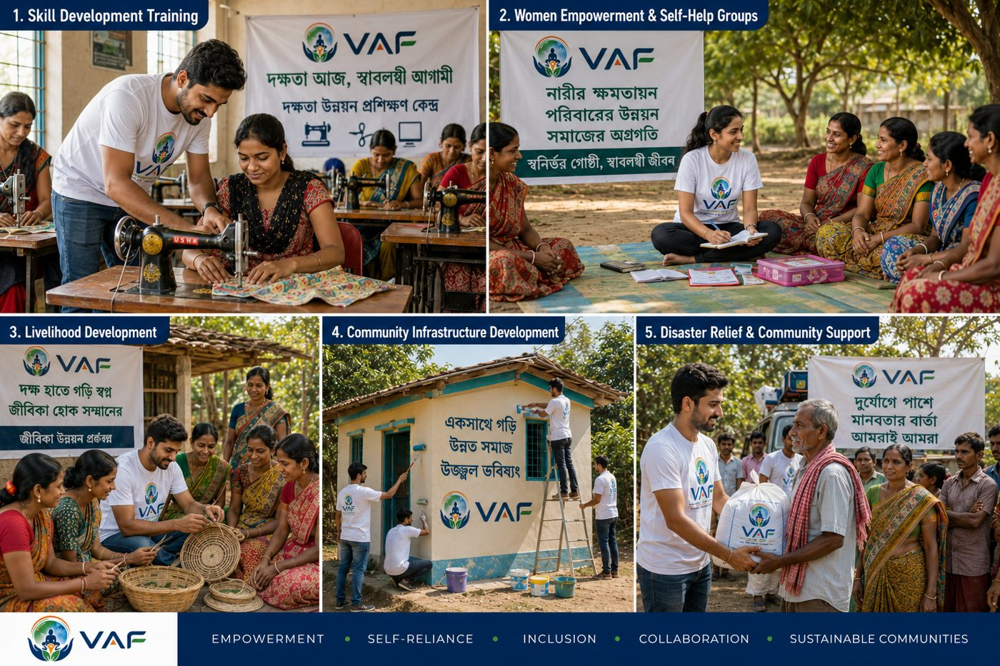

The Vector for Advancement Foundation exists because true, lasting development cannot happen in isolation — and we decided to do something about it.

Every great change begins with a clear direction. The Vector for Advancement Foundation (VAF) was born out of a simple yet powerful realization: true, lasting development cannot happen in isolation. When we looked at the challenges facing marginalized communities, we saw that health, education, the environment, and social empowerment are all deeply connected. Fixing just one piece of the puzzle wasn't enough; our communities needed comprehensive support to truly thrive.
Witnessing these interconnected challenges, we decided to act. We established VAF to be the driving force — the 'vector' — that channels collective compassion into targeted, on-the-ground action. We started this journey to bridge the gap between good intentions and real impact, ensuring that every effort contributes to building a stronger, healthier, and more equitable society across all four pillars of development.
To drive measurable and sustainable advancement in underprivileged communities by ensuring access to quality education, essential healthcare, environmental conservation, and empowering development programs.
To create an equitable world where every individual is empowered to thrive, supported by a healthy environment and a compassionate community.
Team details, photos, and bios will be added here once provided by the VAF team.
Team photos and bios will be updated before launch.
We're always looking for passionate individuals to join our mission.